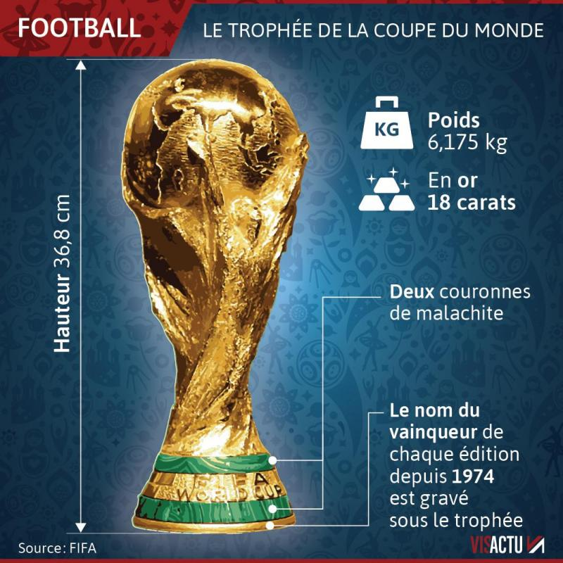
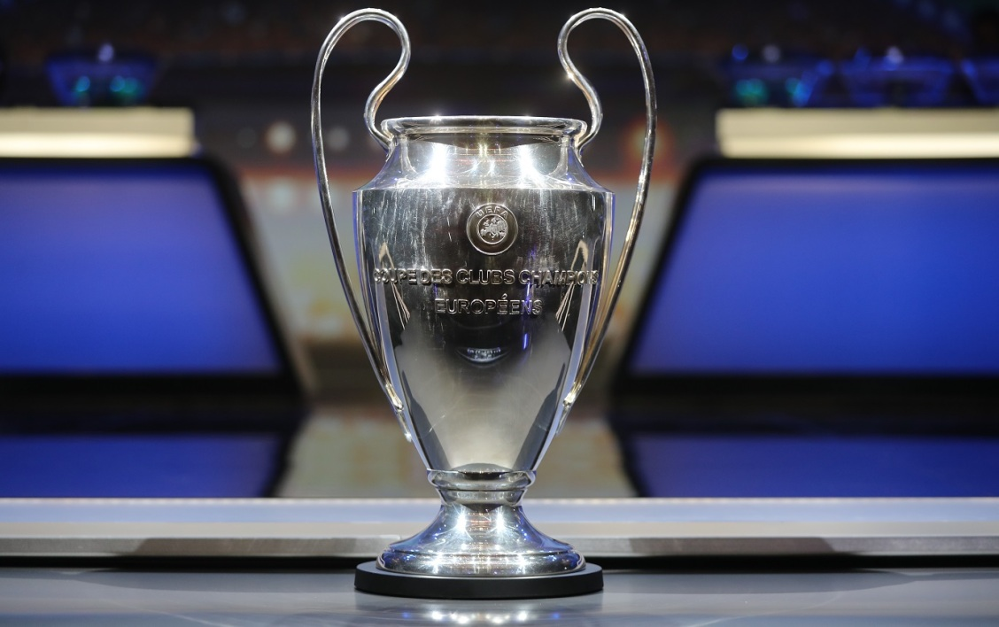

Il existe plein de compétitions au football. Il y a déja les différents championnats dans chaque pays avec tous les clubs qui rencontrent deux fois chaque autre club du championnat. Il y a la coupe du monde qui est organisée tous les 4 ans dans un pays, cette compétition réunit 32 nations qui sont les meilleures dans leur continent dans 8 poules de 4 équipes chacune. L'euro,la coupe d'afrique des nations, la coupe d'Asie et la Copa América sont des compétitions organisées dans un pays défini. Pour l euro ca se passe dans un pays européen avec les meilleures nations d'Europe. Pour la Copa América,ca se passe dans un pays d'amérique et la compétition réunit les meilleures nations d' Amérique. Pour la coupe d'afrique des nations, ca se passe dans un pays d'afrique réunissant les meilleures nations d'afrique. Pour la coupe d'Asie ca se passe dans un pays d'Asie avec les meilleures nations d'Asie. Il y a la ligue des champions qui réunit 32 clubs européens les mieux classés dans leur pays selon les critères de classement du pays. Ca peut n etre que le premier du championnat, ca peut etre les 2 premiers du championnat, les 3 premiers du championnats voire même dans certains cas les 4 premiers. Les équipes sont répartites dans 8 poules de 4 équipes. Une équipe ne peut pas se retrouver dans la même poule qu une équipe du meme pays.Les 2 premiers de la poule sont qualifiées pour la suite de la compétition. L europa league est une compétition rassemblant des clubs d europe classés dans leur pays un cran en dessous des équipes de ligue des champions Ca peut etre le suivant les 2 suivants ou les 3 suivants du classement qui peuvent etre qualifiés pour la compétition. Dans les seizièmes de finales de la europa league, les 8 équipes de ligue des champions qui sont arrivées 3ème de leur poule participent a la suite de la europa league. Les 2 premiers de chaque poule sont qualifiés pour la suite de la compétition. Pour chaque compétition, un trophée est remis a l équipe qui aura gagné la finale de la compétition. Le capitane devra soulever le trophée avant ses coéquipiers.


Page 1 Page 4